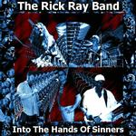

| Artist: | Rick Ray Band |
| Title: | Into The Hands Of Sinners |
| Label: | Neurosis Records |
| Length(s): | minutes |
| Year(s) of release: | 2003 |
| Month of review: | [06/2003] |
| 1) | Breakout | 7.19 |
| 2) | Feel Like I'm Gone | 8.16 |
| 3) | You're Not Alone | 5.21 |
| 4) | From One Side To The Other | 5.27 |
| 5) | Loriann | 5.19 |
| 6) | Only Human | 5.20 |
| 7) | The Clock Is Ticking | 5.10 |
| 8) | Into The Hands Of Sinners | 7.35 |
| 9) | Invisible Man | 3.35 |
| 10) | Supreme Court Jester | 5.47 |
| 11) | The Road To Freedom | 5.54 |
| 12) | Lunatic Love | 4.03 |
Feel Like I'm Gone is an even longer track, just over eight minutes. It is a slow opener, with plenty of percussion and drums, the latter more low key than the first. The vocals are slow, a bit depressed sounding. Again, the singing sounds more like a demo recording, but maybe that is simply the status. The vocal melody itself is quite okay.
With You're Not Alone, Rick Ray is back the vocals, and he sounds better than he ever did. The combination of Ray on guitar and Schultz soloing on reeds is back on this track, and again the drum adds a good drive to the good soloing on the part of Ray's guitar. There is really some tension here, on this well. Not that the music is so quiet, but outside the solo's it is quite accessible.
With From One Side To The Other we encounter the first ballad on this album. Friendly acoustic guitar opens, after which clarinet and drums set in as well, all in a laid back fashion. The electric guitar is also more low key on this one. A track in the line of Rick's older work, but one of the more uneventful ones. The focus is mainly on the lyrics this time, less on the music, which only accompanies. A long outro on this one.
Loriann has the same kind of beginning, but sounds clearer. The melody played here in the accompaniment of keyboards is quite subtly beautiful at times. The song remains acoustic throughout (well of course the keys aren't but you know what I mean) and instrumental too (but why did I just call it a song then?).
I would think it is time to rock again, but Only Human opens slowly as well. For some reason, I think of this one more as a pop track than a rock track. The melody is somewhat up-beat and well poppy, but in a low key kind of way. The pace goes up a bit more even later on. The repetitive melody in fact reminds me of the repetitive guitar in Don't Fear The Reaper by Blue Oyster Cult, a family likeness. The vocals are by the drummer Cek now, while Schultz meanders away on his clarinet. The vocals lack a significant melody.
The Clock Is Ticking has the typical fast guitar lines, but is still a somewhat laid back tune. This is also because they are kept in the back again. The vocal melody is there this time. The vocalist sings more up front and in a clearer voice as well which helps.
Ah, a new vocalist once again. Now it is the turn of bass player Wood. Into The Hands Of Sinners opens with rock again, it has been a while. It is also striking that this song like track one and three are group affairs. It seems that together they can come with better riffs and melodies. The overall loudness also brings back some of the drive that I have found lacking. The song ends with a long guitar and gurgly keys to top it off.
Invisible Man is a rather short track, and shows that Gary Wood has the making of a good vocalist. He has a voice made for blues rock, and shows that he has expression and that he can bellow. This I guess is something the band needs, a vocal point aside from the guitar work. On this track for instance, the guitar plays a more supporting role.
Supreme Court Jester is a nice pun. The song is plodding bluesrock type stuff with some pretty audible bass playing. Rick Ray 'sings' this one in a very low key. A long instrumental passage dominates the second half of this one.
The Road To Freedom combines the vocals of Phil Noch with catchy acoustic guitar with march drums and a few Ray solos spread throughout. The vocal melody is there, the vocals do come over a bit shaky. Lunatic Love is the up-beat melodic closer of the album. It seems that the vocal melodies have a bit more variety on this album than previous Ray solo albums.